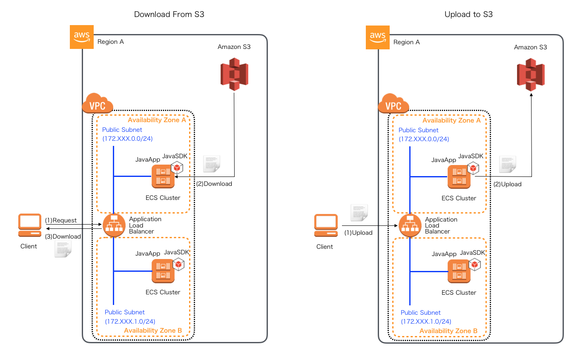
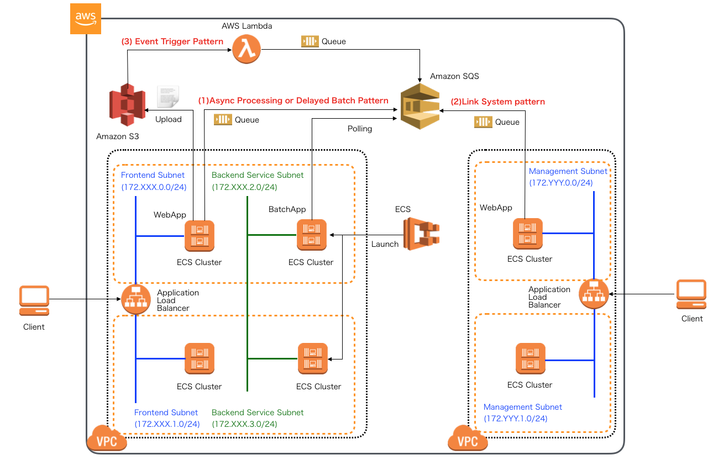
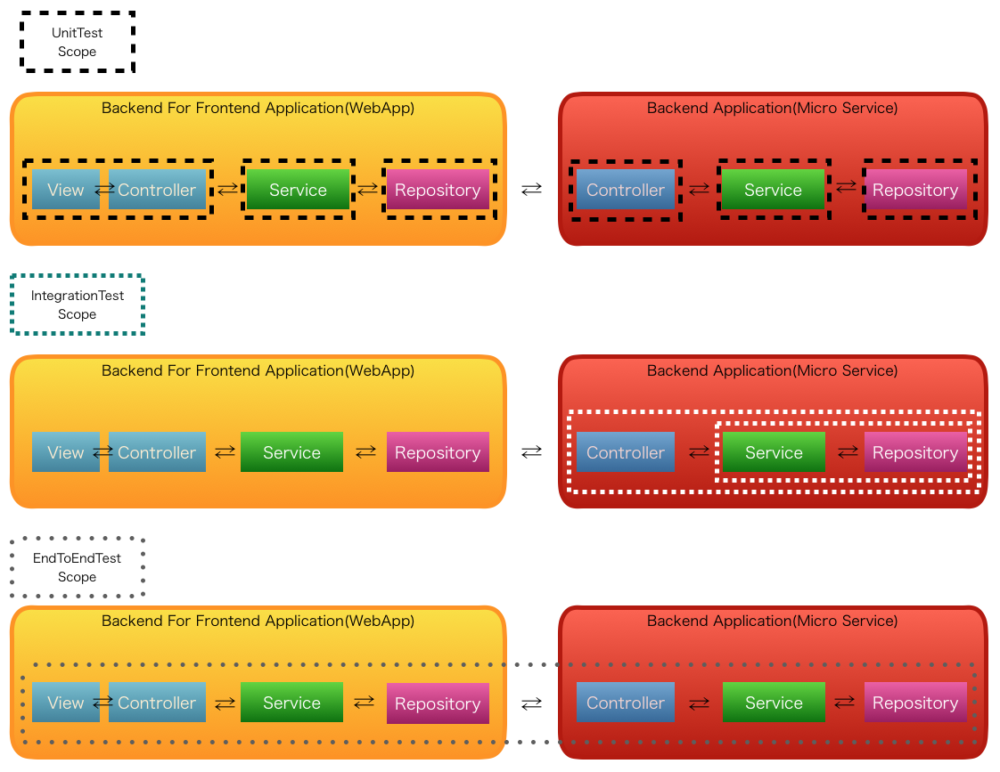
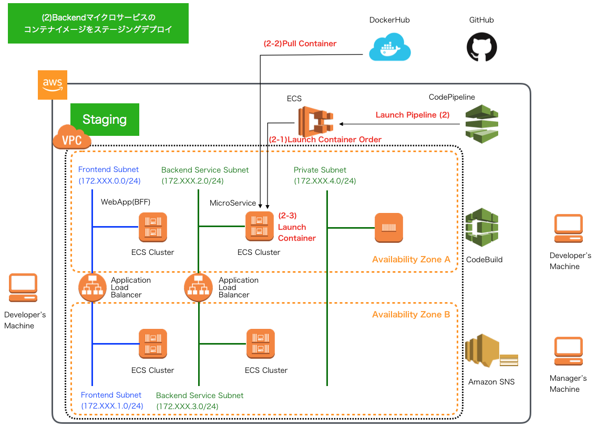

JSUG 勉強会
AWSで作るクラウドネイティブアプリケーションの基本とDevOps
2019.9 @KoheiKawabata
自己紹介

- 名前：川畑 光平(KAWABATA Kohei)
- 会社：(株)NTTデータ
- 今の仕事：プロジェクト支援(主にクラウド系)とR&D
- 2019 APN AWS Top Engineers & Ambassadors
- マイナビ「ITSearch+」で記事連載中
本日のトピックス


その前に…
How to use this slide
- 「reveal.js」を使って、GitHub Pages上に作成
- 黄色の文字はリンク
- ESCキーを押すとスライドのオーバービュー
- Altキー + マウスクリックで拡大ズーム
- J,K,M,Lキーでも遷移(Vimユーザ朗報)
- 幾つかのスライドは下に遷移
Agenda
- 背景と記事の使い方
- 記事のテーマ・トピックス紹介
- AWSで作るクラウドネイティブアプリケーションの基本
- AWSで実践！基盤・デプロイ自動化
- 各テーマのポイント
- 今後の記事公開予定
記事の背景
- Springのガイドラインは社内にもあったが、よく使われるAWSサービスの概要や簡単な使い方・設定方法などがドキュメントとして抜け落ちていた。
- ここ最近で支援したAWSプロジェクトでアプリケーション実装、R&D検証した内容を別のプロジェクトでも利用可能なよう汎用化
- 幾つかのテーマに関して、AWSパートナーソリューションアーキテクトとも議論、内容を全社向けにフィードバック
- どうせなら社外に公開(→マイナビへ)
記事の使い方
-
できるだけ学習コスト低く、AWSをベースとしたクラウドネイティブなアプリケーション開発のポイントを学びたい。とはいえ、最低以下のような経験は必要。
- Java・SpringFrameworkを使ったことがある経験者
- Unix・LinuxなどのPOSIX系OS、Dockerコンテナを使ったことがある経験者
- MavenやGitといった開発ツールを使ったことがある経験者
- AWSのマネージドサービスを可能な限り活用して、できるだけ少数のリソースで開発を行いたい
- クラウドネイティブな実装方法からマイクロサービス、CI/CD、基盤自動化まで一貫したストーリーでのベースの雛形が欲しい
- 各テーマを一部切り取って、構築・実装の参考にしたい
Article Topics
AWSクラウドでよく利用される基本的なサービスの構築方法や、SpringBootをベースとしたアプリケーションを実装する際の基本事項をまとめた連載記事
サーバレス編

ECSコンテナ編

RDS(PostgreSQL)編

NoSQL編

NoSQL編
S3編

STSを使ったクライアントからのS3へのファイルアップロード・ダウンロード

- AWSで作るクラウドネイティブアプリケーション発展編(仮)で解説予定
- 現在実装のみ公開
SQS編(今月から)

- SQS+SpringCloudAWSを使用したオンライン非同期処理パターン(Producer)
- ディレードバッチやクラウドサービスイベントトリガーパターン
- SQS+SpringCloudAWS+SpringBatch+ECSTaskScheduler(Consumer)
- 現在実装のみ公開
Article Topics
マイクロサービスアーキテクチャ(MSA)アプリケーションでDevOpsや基盤自動化する際の基本事項をまとめた連載記事
クラウドネイティブECSコンテナ編の環境でMSAアプリケーションを構築

CI - 静的チェックツール環境導入編 -

CI - SpringBootテストコード実装編 -

-
(5〜6)マイクロサービスにおける単体テストコード実装
- @DataJpaTestアノテーションの利用
- @SpringBootTestアノテーションの利用
- @WebMvcTestアノテーションの利用
-
(7)マイクロサービスにおける結合テストコード実装
- DBUnitの利用
- TestRestTemplateの利用
-
(8)マイクロサービスを呼び出す側の単体テストコード実装
- MockRestServiceServerの利用
- HTMLUnitの利用
-
(9)マイクロサービスを含むEnd2Endテストコード実装
- Seleniumの利用
CI - AWS CodeBuildによるCI実践編 -
CI - AWS CodeBuildによるCI実践編 -
GitHubフローをベースにしたブランチ戦略

AWS CodePipelineによるCD実践編(今月から)

CD - AWS CodePipelineによるパイプライン1 -
Backendコンテナイメージの作成・プッシュ

CD - AWS CodePipelineによるパイプライン2 -
ステージング環境へのBackendコンテナデプロイ

CD - AWS CodePipelineによるパイプライン3 -
WebアプリケーションでのE2Eテスト・コンテナイメージ作成

CD - AWS CodePipelineによるパイプライン4 -
Webアプリケーションのコンテナイメージのプッシュ

CD - AWS CodePipelineによるパイプライン5 -
ステージング環境へのWebアプリケーションのコンテナデプロイ

CD - AWS CodePipelineによるパイプライン6 -
ステージング環境でのその他テスト実行・管理者の承認プロセス

CD - AWS CodePipelineによるパイプライン7 -
Backend・Webアプリケーションのコンテナイメージの並行プッシュ

CD - AWS CodePipelineによるパイプライン8 -
プロダクション環境へのBackend・Webアプリケーションのコンテナ並行デプロイ

今後の記事公開の予定
- AWS CodeStarの利用
- AWS CloudFormationを使用した基盤自動化
各テーマのポイント
サーバレス編
どうなの？サーバーレス
[良いところ]
- 画像加工やエンコードなどとにかくマシンリソースを使う処理の場合、パフォーマンス影響を気にしなくて良い。
- S3ファイルアップロードなどのイベント後続処理といった形で、AWSクラウドサービスの連携が楽。
- SQSキュー、SNSへの連携、DynamoDBやRDSへのアクセスなどの実装はSpring Cloud Function + Spring Cloud AWS + Spring Data XXXと組み合わせればかなりスッキリかける。
[イマイチ]
- エラー発生時の例外ハンドリング(ユーザへの通知やシステムメッセージどうするか)がいつも課題。デッドレターキューに投げつけるなど雑な対応しかできないのでは。
- デバッグやテストが大変。ServerlessFramework導入するしか手はないのか。
ECSコンテナ編
なぜこの構成にしたの？
A. 下記の案もありました。

が、下記の理由によりやめました。

結局、この形で記事を書くことにしました。ただし、唯一の正解とは限りません。

その他ツッコミ
- Q. アプリケーションロードバランサーじゃなくて、Route53のServiceDiscoveryやAppMesh何故使わないの？
- A. ALBだとパスベースルーティング [http://service.com/xxxxxのxxxx] でコンテナごとにリクエストを振り分けられるのでALBにしてます。AppMeshは最近出てきたサービスなのでまだ試してません。将来的に検証する予定です。サービスの切り出し単位によっても異なりますし、将来的な意味でも、唯一の正解ではないと思います。
- Q. EKS(Elastic Kubernetes Service)は使わないのですか？
- A. EKSが東京リージョンにリリースする前に検討していたので、いったん見送りました。それにECSが想定していた以上にオーケストレーションとして優秀だったこと(ALBとECSコンテナ間のポートマッピングやセキュリティ制御など不足が感じられなかったこと)や後述するCodeBuild、CodePipelineとのCI、CD連携は現在もEKSよりECSの方が一日の長があります。ただし、Kubernetesの使用はベンダロックインの観点から採用頻度が高いので今後検証する予定です。
public class HelloWorld {
public static void main(String[] args) {
System.out.println("Hello World!");
}
}